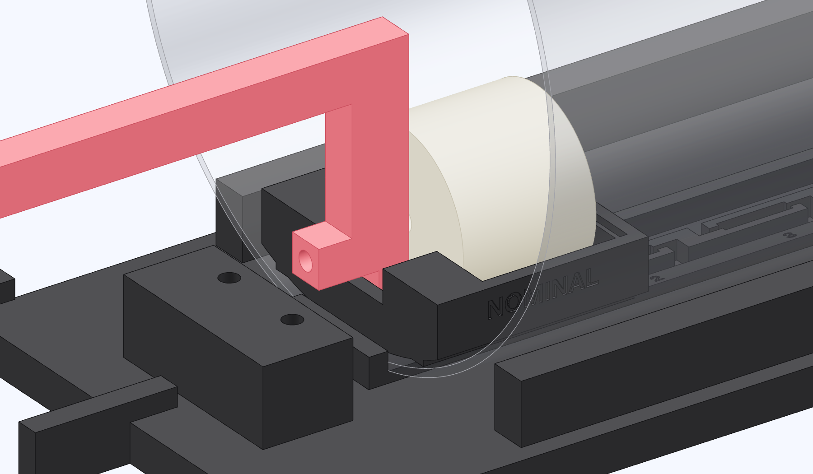

Couple the sled to the rod
Put the loaded sled into the open end away from the slide, slot first. The roller drops in at the mouth.

- With motor power disconnected, feed the sled toward the mouth until the slot is under the rod leg.
- Lift the far end of the rod just enough to clear the sled, then lower the roller fully into the slot.
- Turn the slide coupling by hand to move the sled away from the tab and back. Watch both runners and the roller.
Check the coupling
The roller stays seated through reversal. The sled rides on both runners and the float clears the tube. Stop at any bind and check the rod height, cradle seating and the sled's orientation.